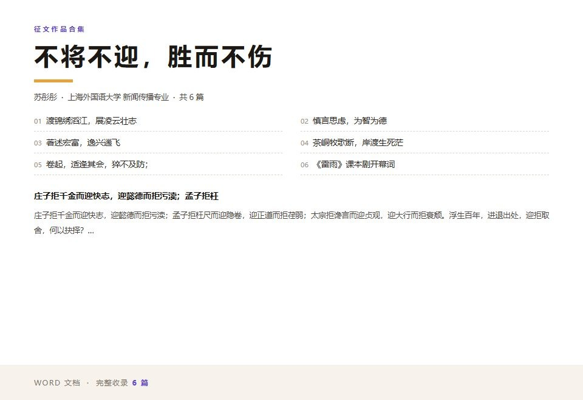

01
内容策划与文案创作
能独立完成选题拆解 → 结构搭建 → 成稿润色；同一素材可按微信、微博、抖音、网页端改写不同版本。
熟练
多次在征文比赛中获奖
让每一条内容，都值得被看见
About
我是 苏彤彤，上海外国语大学新闻传播专业 2026 级大一学生。 在「薪飞扬实习」看到「人民科创」招募新媒体运营实习生的信息后，我认真读了每一条岗位职责， 也认真想了自己现在能交付什么、还差什么。
我现在的底子主要在文字上：写稿、改稿、按不同平台调整语气。工具层面， 秀米排版已经能独立完成，办公软件日常在用。 我清楚自己是大一，专业能力还在积累，所以更在意「准确」和「及时」这两件事 —— 发布前固定做二次校对、信源多源核对，把准确性当成最不能让步的一条。
接下来我会把重心放在两件事上：一是继续打磨文字和选题判断， 二是把统计学基础、平台投放机制这些课程内容真正用起来，让内容决策有数据支撑。
Capabilities
对照招聘信息里的「岗位职责」与「任职要求」逐条拆解，下面每一项都标注了当前水平与实际情况。 带 标记的是我还在补强的部分，我不会假装它已经满分。
能独立完成选题拆解 → 结构搭建 → 成稿润色；同一素材可按微信、微博、抖音、网页端改写不同版本。
熟悉秀米图文排版逻辑：层级、留白、配色、引导关注与阅读节奏，能做出可直接推送的成品推文。
正在修读「统计学基础」专业大类选修课，将系统学习 SPSS 等数据处理工具，用数据支撑内容优化建议。
熟练使用文档、表格、演示类办公软件，交付格式规范；写稿阶段会借助常用工具软件做初稿梳理与文字校对。
做事细心严谨，发布前双重校对；大一课业压力相对可控，拥有充裕精力与强求知欲，能承接临时交办事项。
Job Fit
左边是「人民科创」招聘信息里的原文要求，中间是我对应的能力，最右边是我能拿出来的作品与记录。 我把还在成长的部分也留在这里 —— 清楚的自我认知，比漂亮的措辞更有用。
| 岗位职责 / 任职要求 | 我的对应能力 | 作品与记录 |
|---|---|---|
| 职责 1 协助社交媒体平台（微信、微博、抖音、网页等）的日常内容策划、编辑与发布，确保内容及时性与准确性。 | 具备选题拆解到成稿的完整链路能力；熟悉秀米排版与多平台图文规范；写稿时会借助工具软件加快初稿速度，但事实、语气与分寸感全部人工确认。发布前固定执行二次校对清单。 |
《征文作品合集》共 6 篇 已发布的秀米推文 |
| 职责 2 参与数据分析工作，通过对用户行为数据的分析，为内容优化提供建议。 | 正在修读统计学基础选修课，将学习 SPSS；已理解完播率、互动率、涨粉来源等核心指标，能用表格做基础复盘并整理成结论。 | 课程学习中 |
| 职责 3 协助策划并执行线上互动活动，提升用户参与度和粉丝粘性。 | 能参与互动玩法的内容策划与规则梳理（评论区互动、话题挑战、抽奖等），并做成清晰的执行清单；熟悉各平台在活动玩法上的规则边界。 | 可面试详述 |
| 职责 4 收集行业动态和热点话题，为内容创作提供素材和灵感。 | 已形成固定的每日热点浏览习惯：多平台热榜 + 关键词订阅 + 摘要归档，沉淀成可检索的选题库。 | 可面试详述 |
| 职责 5 协助完成领导交办的其他新媒体相关工作。 | 责任心强、响应快，对临时交办的任务不推诿，交办事项主动同步进度。 |
到岗时间：每周 3 天起 实习周期：3 个月以上 |
| 要求 1 本科及以上学历在校学生，新闻、传播、新媒体等相关专业优先。 | 上海外国语大学新闻传播专业在读，专业完全对口；上外的语言环境也让我能处理中英双语内容。 |
上海外国语大学 · 新闻传播 对口 |
| 要求 2 热爱新媒体行业，对社交媒体平台有深入了解，熟悉各平台的运营规则和玩法者优先。 | 长期深度使用小红书、B 站、抖音，关注平台规则变化与流量逻辑；正在系统学习小红书蒲公英平台与抖音巨量引擎的数据投放机制。 | 面试时可展开聊 |
| 要求 3 具备良好的文字功底和内容创作能力，能够撰写吸引人的文案。 | 多次在征文比赛中获奖；能写严肃的机构稿，也能写有网感的平台文案。 |
《征文作品合集》 获奖 |
| 要求 4 熟练使用办公软件和新媒体运营工具，如秀米、剪映等。 | 熟练使用秀米排版，能独立完成可直接推送的图文（对应要求里的「如秀米」）；办公软件日常使用。剪映剪辑与封面海报这类原创视觉我还在学，目前没有成型作品，不做承诺。 | 已发布的秀米推文 |
| 要求 5 有较强的学习能力和团队协作精神，工作积极主动，责任心强。 | 秀米排版是自己找教程练出来的，学习能力有实际落点。做事细心严谨：发布前固定执行二次校对，涉及事实与数据逐条核对来源。习惯用共享文档和清单推进协作，交办事项主动同步进度；课业压力可控，能稳定每周到岗 3 天并连续实习 3 个月以上。 | 无需补充 |
内容策划、文案撰写、秀米排版与图文编辑、多平台内容改写、事实核对与二次校对。
数据投放机制（蒲公英 / 巨量引擎）、统计学基础与 SPSS、线上互动活动的完整执行经验。
我还在打基础，但能把交到手上的每件小事做扎实：写清楚、排整齐、发准确，并且愿意一直学下去。
Selected Work

收录 6 篇独立完成的文章，涵盖议论文、散文与诗词：一篇关于「迎拒取舍」的思辨，一篇写青春志向，一篇谈慎言之道；另有两篇文本细读 —— 苏轼《念奴娇·赤壁怀古》的自省精神，以及《边城》的生命、自然与苦难三重意象。
在秀米上独立完成的公众号推文：选题立意、文案撰写、图文层级与阅读节奏。用「真正的死亡是被遗忘，真正的活着是被看见」切入，串联三部电影讲同一件事。
该分类下暂无作品，欢迎补充。
How I Work
下面是我日常处理一条内容的顺序和思路。我还没到「有一套成熟方法论」的程度， 每一步都写明用什么、人来把关什么，以及我在哪一步最容易出错。
多平台热榜 + 关键词订阅
每天固定时段浏览各平台热榜与关键词订阅，交叉比对后归档，避免只凭第一眼的印象选题。
头脑风暴 + 人工筛选
先列出多个可能角度再筛掉平庸的，避免第一反应就动笔。判断标准是：读者凭什么点开。
初稿 → 事实核验 → 二次校稿
事实、数据、机构表述逐条核对来源；语气和分寸感自己定，不外包给任何工具。
一稿多改模板
公众号要完整、微博要短促、抖音要钩子，同一素材按平台特性拆成不同版本。
秀米
把版面节奏和层级理清楚，保证读者点得开、看得完。
表格 + SPSS（在学）
记录曝光、互动、涨粉来源，用数据反过来决定下一轮选题。这一环我目前最弱，正在补。
关于准确性的态度：工具可以帮我加快初稿和资料整理，但事实与出处一律由我人工核验。 涉及数据、政策与机构表述的内容，来源不清楚就不发。
Timeline
2026 级大一在读。开始系统接触新闻传播的专业训练，同时修读「统计学基础」专业大类选修课。
在读多次在征文比赛中获奖，收录成《征文作品合集》共 6 篇，涵盖议论文、散文与诗词。写作是我目前最确定的底子。
已确认秀米排版是自己找教程练出来的；也慢慢在补充内容领域的其他技能。
系统学习小红书蒲公英平台与抖音巨量引擎的数据投放机制，补齐岗位职责 2 所需的分析视角。
学习中在部门里参与活动策划与信息整理类工作，习惯按清单推进、按时交付。
在任